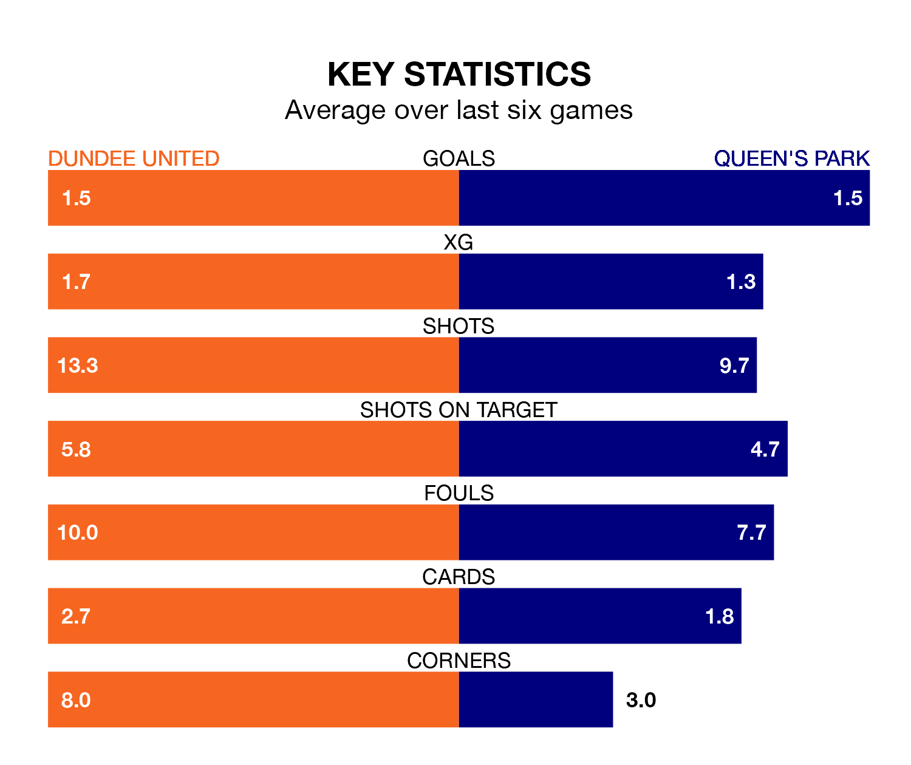

Dundee United host Queen's Park in Saturday's match at Tannadice Park looking to bounce back from defeat last time out in the Championship.
The Terrors, who sit top of the league after 23 games, fell to a 2-1 away defeat to Raith Rovers on February 16.
They face a Queen's Park side who secured a draw in their last match, a 0-0 tie with Greenock Morton, and who sit seventh in the table.
With 46 goals in 23 games so far this season, Dundee are the league's joint-highest scorers with 2.0 goals per game. And they are conceding fewer than average, letting in 13 goals at a rate of 0.6 per game.
Queen's Park, meanwhile, are below average scorers, with 1.3 goals per game, compared to a league average of 1.4. They have conceded 1.7 goals per game.
With Jack Walton between the sticks, United can rely on one of the league's safest pair of hands. He has kept 13 clean sheets in his 23 appearances this season, and no 'keeper has prevented the opposition scoring more often in the Championship.
In the Spiders's net, Calum Ferrie has five clean sheets in 17 games. He has conceded a goal every 64 minutes, more than twice as often as the 159 minutes between goals for Walton.
The Terrors are in mixed form in the Championship, with three wins and a draw from their last six games.
With four wins and a draw over that period, the away side's form is better – they have taken 13 points from 18, compared to the hosts' 10.
Over the last two years, Dundee and Queen's Park have played each other twice. Dundee won one of them and they drew the other.
Their last meeting was on December 22, when they played out a 0-0 draw.
Updated: 12:18 (UTC), 19/02/24